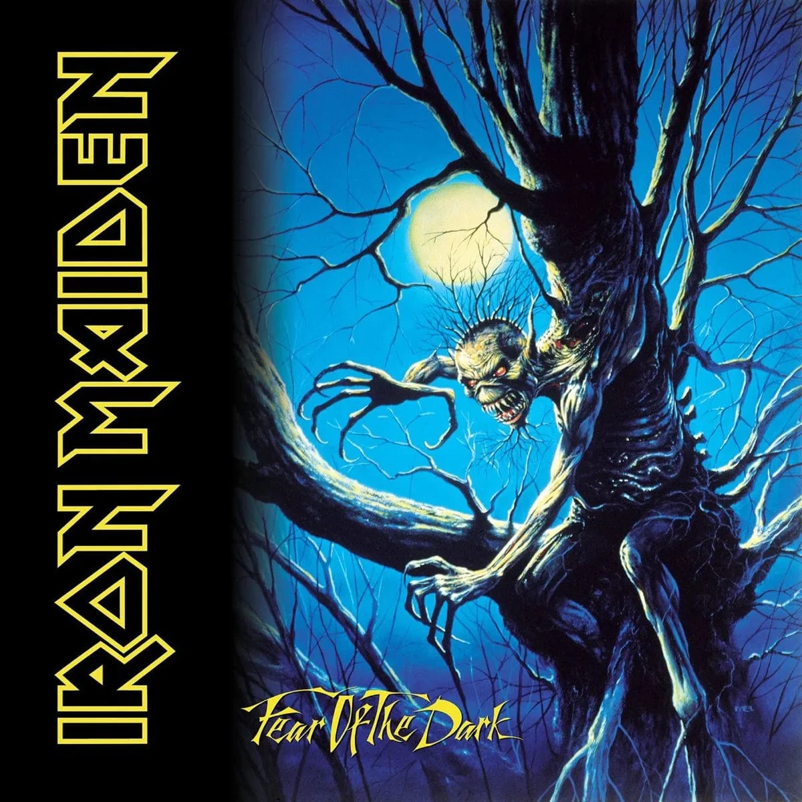

"Fear of the Dark"
Ficha técnica
- Artista: Iron Maiden
- Año: 1992
- Género: Heavy Metal
Comentario
El último álbum de la banda con Bruce Dickinson antes de su primera salida, con la canción homónima convertida en himno en directo.
Un disco más oscuro y melódico, que muestra la madurez de la banda tras una década de éxito.
